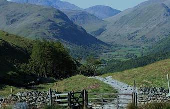

<p style="text-align: justify;">Sajek Valley is an emerging tourist spot in Bangladesh situated among the hills of Kasalong range of mountains in Sajek union, Baghaichhari Upazila in Rangamati District. It is call the paradise of Bangladesh. Sajek is a union located in north of Chittagong Hill Tracts.it from Khagrachhari town, it is situated 67 km north-east from Khagrachhari town and 95 km North-West from Rangamati city. The border of Bangladesh and Mizoram of India is 8 kilometer east from Sajek.</p>
